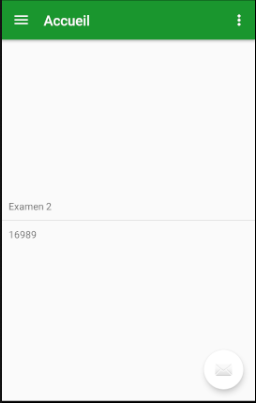

Pour accéder a la liste des QCMs il faut au préalable avoir sélectionner une catégorie.
Une fois la catégorie sélectionner vous arrivez sur la page listant les QCMs disponibles.

Une fois la liste afficher sélectionner le QCM en cliquant dessus.
Si aucun QCM ne s'affiche dirigez-vous dans la section : Je ne vois pas de QCM
Créé avec HelpNDoc Personal Edition: Écrire des livres électroniques ePub pour l'iPad